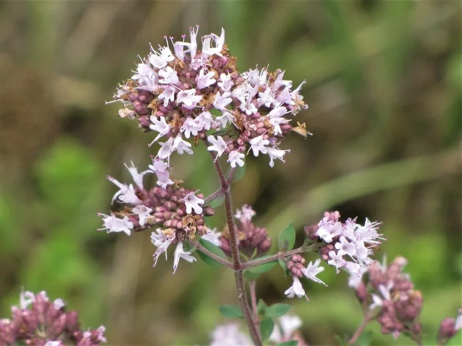

花卉与草本 · 植物界
牛至 Origanum vulgare

唇形科多年生草本香草，叶片揉碎有浓郁辛香，是披萨和地中海料理的灵魂香料，也有药用价值，原产地中海。
- 分类
- 门被子植物门纲木兰纲目唇形目科唇形科属牛至属
- 栖息环境
- 地中海沿岸的干燥草地与岩石坡地，喜光、耐旱
- 地理分布
- 原产地中海沿岸与西亚，中国各地有栽培，部分山区有归化
- 保护级别
- 暂无评估
物种志
牛至为唇形科牛至属多年生草本，株高 30–60 厘米，茎直立或斜生，四棱形，多分枝。叶片卵形，对生，表面有腺点，揉碎后散发浓郁辛香。伞房状聚伞花序顶生，花小，粉紫色或白色，花期 6–9 月；果实为小坚果。
牛至原产地中海沿岸和西亚，喜阳光充足、温暖干燥和排水良好的环境，耐旱耐寒，忌积水和湿热。它叶片含香芹酚、百里香酚等挥发性成分，是意大利披萨、番茄酱和烤肉中不可或缺的香草，干燥后香气更浓；全草也可入药，有解表化湿之效。栽培以疏松的石灰质土壤为主，生长期摘心可促进分枝。
形态与习性
- 株高30–60 厘米，茎四棱形
- 花期6–9 月，花小，粉紫色或白色
- 果期花后结小坚果
- 光照喜充足阳光
- 水分耐旱，忌积水
- 土壤疏松、排水良好的石灰质壤土
- 繁殖播种、分株、扦插
- 主要用途烹饪香草、全草入药
趣味知识
- 牛至是意大利披萨和番茄酱中不可或缺的香草，干燥后香气更浓。
- 叶片表面有腺点，揉碎后会散发浓郁的辛香。
- 它含香芹酚等挥发性成分，全草也可入药。
- 牛至耐旱耐寒，但对积水十分敏感。